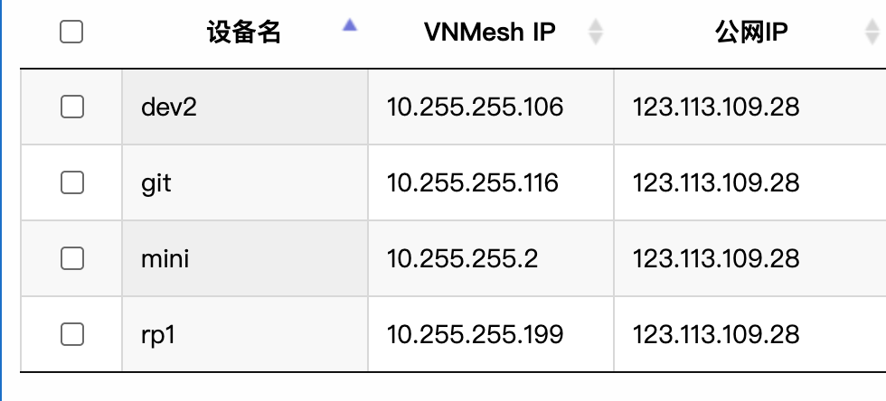

配置路径: "基础配置-在线设备"

同一个账号可以登录多台设备, 这里展示这些设备的信息
配置视图： config-view -> xnetc-view
使用示例:
xnetc-view>show neighbor PublicIP IP Hostname -------------------------------------- 1.1.1.1 10.255.255.2 win 2.2.2.2 10.255.255.3 iphone 3.3.3.3 10.255.255.4 macbook
命令说明:
| show neighbor | 显示在线设备 PublicIP: 设备自身的公网IP IP: 给设备分配的唯一标记 Hostname:设备名 |